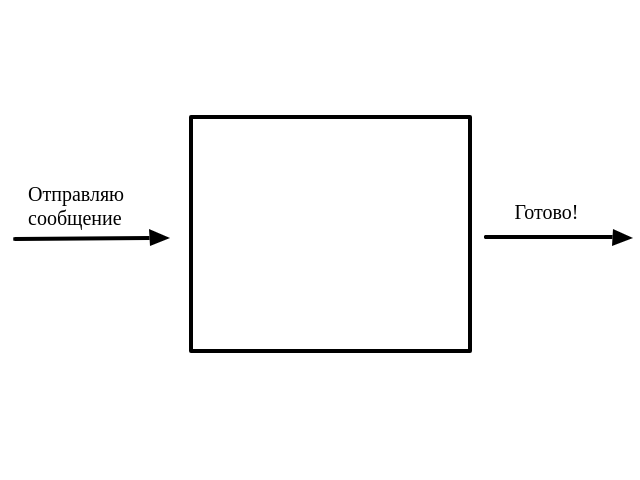
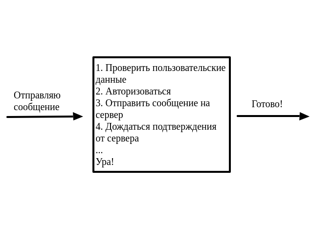
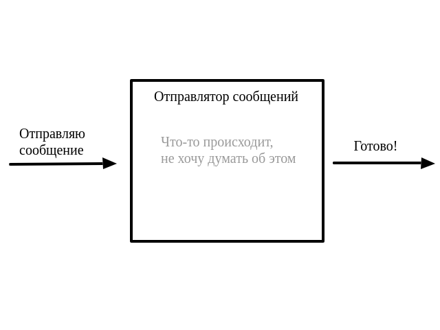
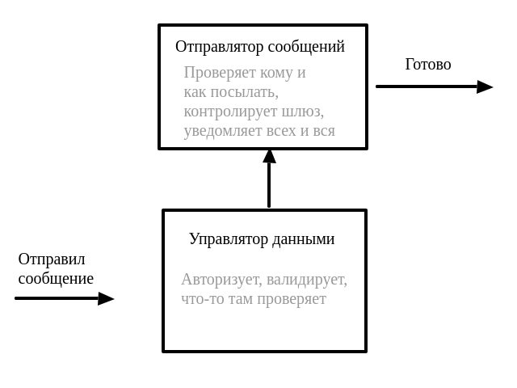
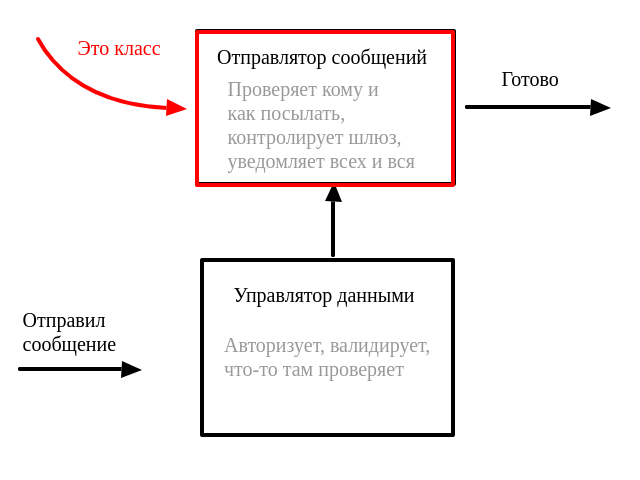
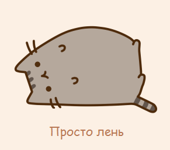

Решение

Функции
Парадигма программирования, в которой основными концепциями являются понятия объектов и классов.
Я сделал задачу, хочу скинуть ссылку Егору в телеграмме.





class Sender:
...
class User:
...
def send_message_to_user(message):
message.user.send_status_of_message(
message,
by_sender = Sender(),
)
class User:
email = emailField()
login = string(50)
User(email='python_master3000@mail.ru', login='pythonmaster')
User(email='jsIsCool@rambler.ru', login='jsNinja')
class Counter:
def __init__(self, initial=0):
self.value = initial
def increment(self):
self.value += 1
def get(self):
return self.value
с = Counter(5)
c.increment()
c.get()
class Counter:
# Сначала срабатывает инициализация
def __init__(self, initial=0):
self.value = initial # запись атрибута
def increment(self):
self.value += 1
def get(self):
return self.value # чтение атрибута
__init__ - не констуктор__new__ vs __init____new__ создает пустой экземпляр класса__init__ инициализирует его__new__ vs __init__class Noop:
def __new__(cls, *args, **kwargs):
print("Creating instance with {} and {}"
.format(args, kwargs))
instance = super().__new__(cls) # self
return instance
def __init__(self, *args, **kwargs):
print("Initializing with {} and {}"
.format(args, kwargs))
__new__ vs __init__
noop = Noop(42, attr="value")
# Creating instance with (42,) and {'attr': 'value'}
# Initializing with (42,) and {'attr': 'value'}
selfВ отличие от Java или C++ в Python нет магического слово this.
Первый аргумент любого метода экземпляра - слово self
selfДобавляем к экземпляру класса атрибут
self.some_attribute = value
selfclass A:
def __init__(self, value):
self.value = value
a = A(5)
a.value # 5
A.value # AttributeError
selfA(5).value # ???
selfA(5).value # 5
class Counter:
all_counters = []
def __init__(self, initial=0):
Counter.all_counters.append(self)
#...
Counter.all_counters # []
a = Counter()
b = Counter(5)
Counter.all_counters # ???
Counter.all_counters # []
a = Counter()
b = Counter(5)
Counter.all_counters
# [<__main__.Counter object at ...>,
#<__main__.Counter object at ...>]
Можно задавать атрибуты классов прямым присваиванием
Counter.some_attribute = 'Hey!'
Counter.some_attribute # 'Hey!'
В Python нет модификаторов классов
В Python нет модификаторов классов
Но есть договоренность
В Python нет модификаторов классов
Но есть договоренность, чисто по-братски
class Noop:
public_attribute = 42
_private_attribute = [1, 2 ,3]
Noop.public_attribute # 42
Noop._private_attribute # ???
class Noop:
public_attribute = 42
_private_attribute = [1, 2, 3]
Noop.public_attribute # 42
Noop._private_attribute # [1, 2, 3]
class Noop:
__very_private_attribute = (1,)
class Noop:
__very_private_attribute = (1,)
Noop.__very_private_attribute # AttributeError
class Noop:
__very_private_attribute = (1,)
Noop.__very_private_attribute # AttributeError
# Но можно так
Noop._Noop__very_private_attribute # (1,)
class Noob:
"""I'm empty class"""
Noob.__doc__
# "I'm empty class"
Noob.__name__
# 'Noob'
Noob.__module__
# '__main__'
Noob.__dict__
# Тут описаны все внутренние метода и атрибуты класса
noo = Noob()
noo.__dict__
# Тут описаны все внутренние метода
# и атрибуты экземпляра
class Counter:
def __init__(self, initial=0):
self.value = initial
class OtherCounter(Counter):
def get(self):
return self.value
c = OtherCounter()
c.get() # 0
c.value # 0
Поиск имени атрибута или метода происходит в __dict__ экземпляра. Если
нет таких имен, то ищет в классе, а затем рекурсивно по наследникам.
class Counter:
def __init__(self, initial=0):
self.__class__.all_counters.append(self)
self.value = initial
class OtherCounter(Counter):
def __init__(self, initial=0):
self.initial = initial
super().__init__(initial)
super().__init__(initial)c = OtherCounter()
# сначала __init__ у себя, затем __init__ у родителя
class A:
def f(self):
print('A.f')
class B:
def f(self):
print('B.f')
class C(A,B):
pass
C().f() # ???
В случае множественного наследования Python использует алгоритм линеаризации C3 для определения метода, который нужно вызывать
Используем функцию классов mro() - Method Resolution Order
C.mro()
# [<class '__main__.C'>, <class '__main__.A'>,
# <class '__main__.B'>, <class 'object'>]
C().f() # ???
C().f() # 'A.f'
"Магическими" методами называются внутренние методы классов, например, __init__.
С помощью магических методов можно:
С помощью магических методов можно:
С помощью магических методов можно:
__str__ и __repr__class Counter:
def __init__(self, initial=0):
self.value = initial
def __repr__(self):
return 'Счетчик({})'.format(self.value)
def __str__(self):
return 'Привет! Я Счетчик'
__str__ и __repr__c = Counter(42)
c # 'Счетчик(42)'
print(c) # 'Привет! Я Счетчик'
__bool__class Counter:
def __init__(self, initial=0):
self.value = initial
def __bool__(self):
return bool(self.value)
c = Counter()
if not c:
print('No counts yet') # 'No counts yet'
instance.__eq__(other) # instance == other
instance.__ne__(other) # instance != other
instance.__lt__(other) # instance < other
instance.__le__(other) # instance <= other
instance.__gt__(other) # instance > other
instance.__ge__(other) # instance >= other
__call__class LikeFunction:
def __init__(self, value):
self.value = value
def __call__(self):
return self.value
func = LikeFunction(5)
func() # 5
for element in [1, 2, 3]:
print(element)
for letter in 'string':
print(letter)
for line in open('file.txt'):
print(line)
__iter____iter____iter__ возвращает итератор на объектРеализует два метода:
Реализует два метода:
__next__ - возвращает следующий элемент, выбрасывает StopIterationРеализует два метода:
__next__ - возвращает следующий элемент, выбрасывает StopIteration__iter__class seq_iter:
def __init__(self, instance):
self.instance = instance
self.idx = 0
def __iter__(self):
return self
def __next__(self):
try:
res = self.instance[self.idx]
except IndexError:
raise StopIteration
self.idx += 1
return res
sequence = seq_iter([1, 2, 3])
next(sequence) # ???
next(sequence) # ???
next(sequence) # ???
sequence = seq_iter([1, 2, 3])
next(sequence) # 1
next(sequence) # 2
next(sequence) # 3
next(sequence) # ???
sequence = seq_iter([1, 2, 3])
next(sequence) # 1
next(sequence) # 2
next(sequence) # 3
next(sequence) # StopIteration
nextnextnext(iter([]), 42)
iterДве формы вызова:
__iter__iterДве формы вызова:
__iter__iterДве формы вызова:
for i in iter(sum, 5)
# что-то там делаем
forМожно описать концептуально через итераторы
forfor x in xs:
do_something(x)
forit = iter(xs)
while True:
try:
i = next(it)
except StopIteration:
break
do_something(i)
inТакже "под коробкой" реализует с помощью итератора
5 in [1,2,5] # True
inИспользует "магический метод" __contains__
inclass object:
# ...
def __contains__(self, target):
for item in self:
if item == target:
return True
return False
in5 in [1,2,3] # [1,2,3].__contains__(5) False
__iter__ и __next____iter__ и __next__for и in__iter__ и __next__for и in__iter__ и __next__return на yielddef my_first_generator(x):
yield x
x += 1
yield x
gen = my_first_generator(10)
next(gen) # 10
next(gen) # 11
next(gen) # ???
gen = my_first_generator(10)
next(gen) # 10
next(gen) # 11
next(gen) # Ну все, хватит!
gen = my_first_generator(10)
next(gen) # 10
next(gen) # 11
next(gen) # StopIteration
Если генератор дошел "до конца", то дальше уже не пойти
Если генератор дошел "до конца", то дальше уже не пойти
нужно инициализировать новый экземпляр
Генераторы -- ленивы

Генераторы -- "ленивые" функции
returnОтвет:
returnОтвет: можно
returnОтвет: можно
А зачем?
def gen():
for i in range(5):
yield i
return 42
a = gen()
for _ in range(5):
next(a)
# Когда цикл дойдет до 5, что будет?
for _ in range(5):
next(a)
# StopIteration
for _ in range(5):
next(a)
# StopIteration: 42
map в 3 строчки# Тут сами =)
def count(start=0):
while True:
yield start
start += 1
gen_exp = (x for x in range(5))
Аналогично
def gen_exp():
for x in range(5):
yield x
Но не аналогично
lst_compr = [x for x in range(5)]